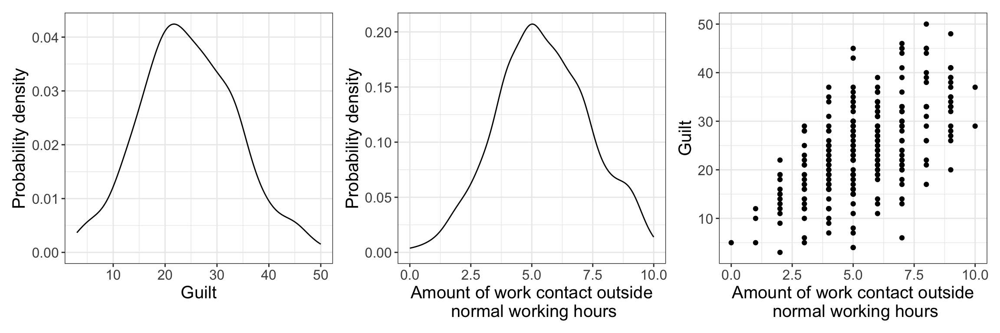
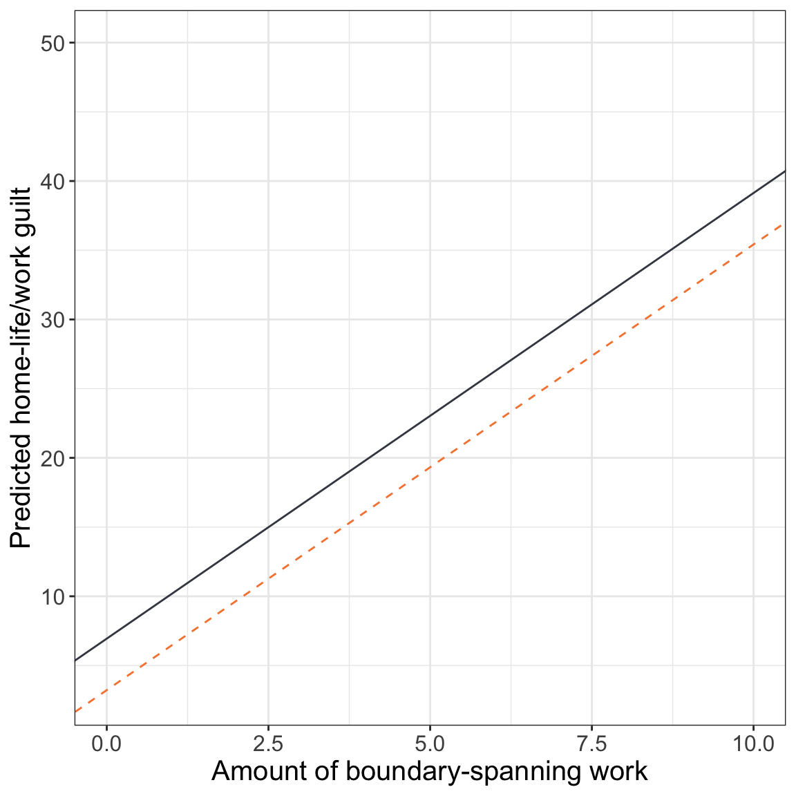
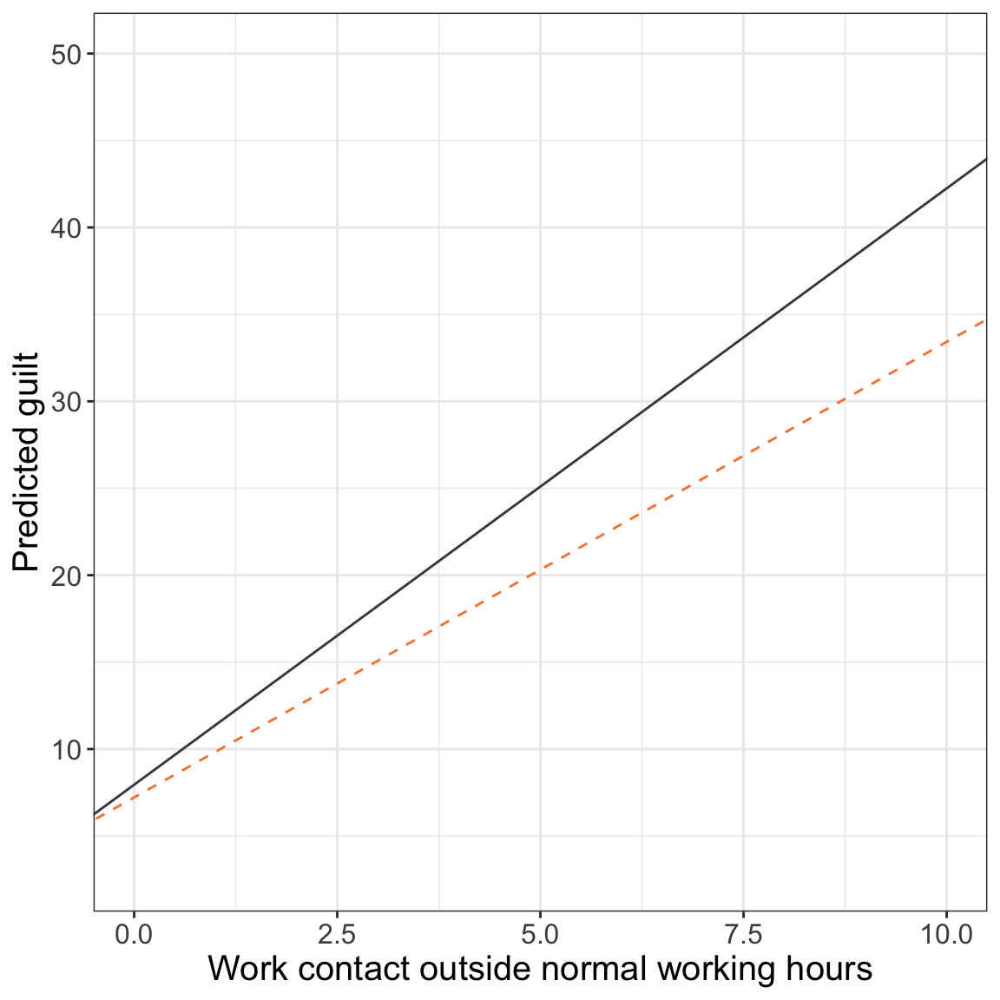
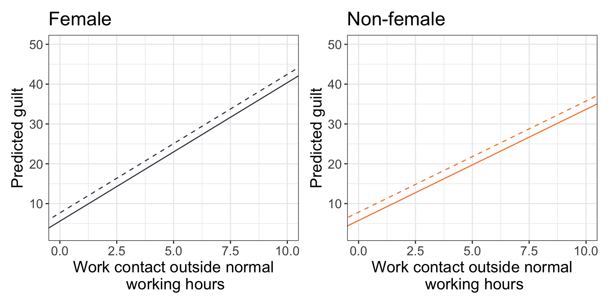
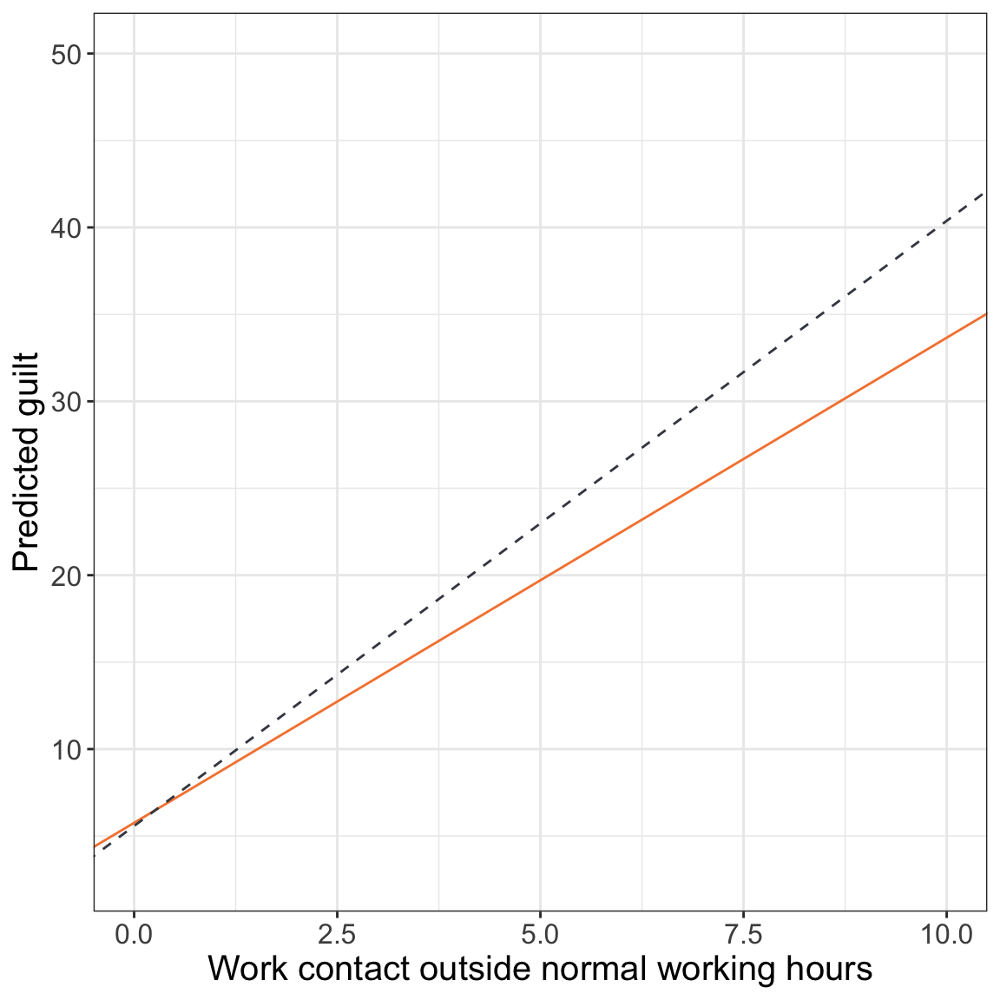

In this chapter, you will learn about how to include and interpret interaction effects in the regression model. To do so, we will use the work-demands.csv data to examine the effect of work contact outside of normal work hours on feelings of guilt and distress. Glavin et al. (2011) posits that due to societal expectations and gender stereotypes around who takes on caretaker and provider roles within a family, that “dealing with competing work and family demands may be more emotionally difficult for employed women compared to similarly situated men” (p. 46). Because of this, we will also evaluate whether there is a differential effect of work contact on guilt based on gender.
To begin, we will load several libraries and import the data into an object called work.
# Load librarieslibrary(broom)library(corrr)library(educate)library(patchwork)library(tidyverse)# Read in datawork =read_csv(file ="https://raw.githubusercontent.com/zief0002/modeling/main/data/work-demands.csv")# View datawork
To begin, as always, we would plot the marginal distributions of guilt (guilt) and amount of work contact outside normal working hours (contact). We will also examine the scatterplot to look at the relationship between amount of work contact outside normal working hours and guilt. We will also examine summary measures for each distribution and the correlation matrix.
# Density plot of pre-test scoresp1 =ggplot(data = work, aes(x = guilt)) +geom_density() +#theme_bw() +xlab("Guilt") +ylab("Probability density")# Density plot of post-test scoresp2 =ggplot(data = work, aes(x = contact)) +geom_density() +#theme_bw() +xlab("Amount of work contact outside\n normal working hours") +ylab("Probability density")# Scatterplot of post- vs. pre-test scoresp3 =ggplot(data = work, aes(x = contact, y = guilt)) +geom_point() +#theme_bw() +xlab("Amount of work contact outside\n normal working hours") +ylab("Guilt")# Layout plotsp1 | p2 | p3# Compute summary statisticswork |>summarize(M_guilt =mean(guilt),SD_guilt =sd(guilt),M_contact =mean(contact),SD_contact =sd(contact),N =n() )
Figure 21.1: Density plots of guilt and amount of work contact outside normal working hours, as well as, the scatterplot showing the relationship between these measures.

The distribution of guilt is unimodal and roughly symmetric. The mean level of guilt is 24.50 on a 50-pt scale (\(SD=9.10\)). The distribution of work contact outside normal working hours is also unimodal and symmetric. The mean amount of contact is 5.47 on a 10-pt scale (\(SD=1.88\)). There seems to be a moderate to strong, positive, linear relationship between the amount of work contact outside normal working hours and guilt (\(r=0.60\)). Employees who are contacted about work outside of normal working hours more often tend to have higher levels of guilt.
21.2 Examining the Effect of Work Contact on Guilt
We will begin by fitting a regression model that regresses guilt on amount of work contact. We will also fit two additional models: one that controls for differences in gender and a second that controls for differences in level of job authority and marital status in addition to gender.
Table 1. Coefficients [95% confidence intervals] for a taxonomy of OLS regression models to explain variation in guilt for employees. All models were fitted with n=300 observations.
Model A
Model B
Model C
Work contact
2.89 [2.45, 3.33]
3.13 [2.71, 3.55]
3.22 [2.96, 3.48]
Female
5.308 [3.68, 6.91]
3.72 [2.71, 4.72]
Job authority
-4.44 [-4.83, -4.04]
Married
2.06 [1.00, 3.12]
Constant
8.73 [6.18, 11.3]
4.24 [1.49, 7.00]
6.86 [5.02, 8.70]
R2
0.357
0.436
0.791
RMSE
7.30
6.85
4.19
Note: Female and Married are dummy-coded indicator variables indicating gender and marital status, respectively.
Based on Model A, there is a positive effect of work contact outside normal working hours and guilt, and this is statistically discernible from 0. In Model B, we find that this relationship persists, and is of larger magnitude, after accounting for differences in gender. We also find that females have higher levels of guilt than non-females, controlling for differences in the amount of work contact outside normal working hours. The results from Model C indicates that the relationship between work contact outside normal working hours and guilt still persists, even after accounting for differences in gender, job authority and marital status. This model also suggests that after accounting for differences in work contact outside normal working hours, job authority and marital status, females continue to have more guilt than non-females.
Visually, we can display the effects of boundary-spanning work and gender (from Model C) by plotting the fitted partial regression lines. To do so, we will partial out job authority by setting it to its mean value of 0.82. We will also partial out marital status by setting its value to 0 (non-married).
ggplot(data = work, aes(x = contact, y = guilt)) +geom_point(alpha =0) +#theme_bw() +xlab("Amount of boundary-spanning work") +ylab("Predicted home-life/work guilt") +geom_abline(intercept =6.94, slope =3.22, linetype ="solid", color ="#424651") +geom_abline(intercept =3.22, slope =3.22, linetype ="dashed", color ="#f5853f")
Figure 21.2: Partial fitted regression lines showing model-predicted guilt as a function of the amount of work contact outside normal working hours for females (charcoal, solid line) and non-females (mango, dashed line). The effects of job authority (mean value) and marital status (non-married) have been partialed out.

This display helps us see that the effect of work contact outside normal working hours (slopes of the lines) is THE SAME for both females and non-females, and is 3.22. We also see that females report higher levels of guilt than non-females, and that this difference in guilt is THE SAME regardless of how much work contact outside normal working hours is experienced.
FYI
Remember, this type of model where the effect of a predictor is THE SAME for each level of another predictor is referred to as a main-effects model.
Unfortunately, the models we have interpreted and evaluated thus far do no allow us to answer whether the effect of work contact on guilt is DIFFERENT across gender. Differential effects of work contact on guilt would imply that the slopes of the regression lines showing the effect of work contact for females and non-females would not be equal (i.e., the fitted regression lines are not parallel). The main-effects models assume that the effect of work contact on guilt is the SAME for females and non-females. In this model the slopes of the regression lines showing the effect of work contact would be the same (i.e., parallel regression lines). In statistical terms we describe differential effects as interaction effects. We would say there is an interaction effect between work contact outside of normal working hours and gender on guilt
21.3.1 Evaluating an Interaction Effect
We can initally evaluate whether there is an interaction effect in the sample by re-creating the scatterplot between work contact and guilt and plotting different regression lines for each gender. To do this we include group= in the aesthetic. Because the column we are grouping on (female) is numbers—remember it is dummy coded—we force R to treat it as categorical by calling the factor() function on it. In addition to grouping by female, we also color by it so that we can better evaluate the different regression lines.
ggplot(data = work, aes(x = contact, y = guilt, group =factor(female), color =factor(female))) +geom_point() +geom_smooth(method ="lm", se =FALSE) +#theme_bw() +scale_color_manual(name ="",values =c("#F5853F", "#424651"),labels =c("Non-females", "Females") ) +xlab("Work contact outside normal working hours") +ylab("Guilt")
Figure 21.3: Scatterplot of guilt versus work contact conditioned on gender. The fitted simple regression lines have also been included.
The two regression lines are not parallel; the effect of work contact outside normal working hours on guilt is different for females and non-females. This is evidence of an interaction in the sample data. The empirical data suggests that the effect of work contact outside normal working hours on guilt is positive for females and non-females, but that the magnitude (slope) of this relationship may be higher for females. In other words, increased amounts of work contact outside normal working hours may be associated with more guilt for females than for non-females.
The inferential question is now: Is this difference in effects (i.e., slopes) that we are seeing in the sample data “real”, or is it an artifact of sampling error? To evaluate this we need to fit a regression model where the effect of work contact on guilt is allowed to differ by gender. To do this, we create another predictor that is the product of the two predictors we believe interact and include that product term in the regression model along with the original predictors we used to create it (i.e., also include the constituent main-effects). In our example, we multiply the dummy-coded female predictor by the work contact (contact) predictor to create an interaction term. Then we fit a model that includes the dummy-coded female predictor, the work contact predictor, and the newly created interaction term.
Notice that the inclusion of the interaction term allows the slopes in the two fitted equations to be different. Moreover, the female slope of \(B=3.43\) is 0.81 units higher than the non-female slope of \(B=2.62\). This difference in slopes is expressed by the estimated coefficient for the interaction term. If the female and non-female slopes are the same, the interaction term would be 0 (i.e., no difference). So to evaluate whether there is a “real” difference in slopes or if it is just due to sampling error, we need to evaluate the null hypothesis that the interaction term is 0. The hypothesis test associated with the interaction term in the tidy() output evaluates exactly this, namely:
\[
H_0: \beta_{\mathrm{Interaction}} = 0
\]
In our example, the inferential results suggest that there is some evidence that the empirical data may not be compatible with the hypothesis that the difference in slopes is 0; \(t(296)=1.85\), \(p=.065\). This suggests that the effect of work contact outside normal working hours on guilt for females may be different than that for non-females.1
FYI
Models that include interaction (i.e., product) terms are referred to as interaction models. The key term in these models is often the interaction term and not the constituent main-effects.
21.3.2 Mathematical Expression of the Interaction Model
In general, the interaction model (with two predictors) can be written as,
To further understand the terms in the interaction model, we will write out the interaction model using the context of our example. (For ease of writing, we will drop the part of the model that specifies the model’s assumptions.)
Notice that in the interaction model, if \(\beta_3\), the coefficient on the interaction term, is zero, the equation reduces to the equation for the main-effects model, namely:
Because of this, in practice, if the observed data are compatible with the null hypothesis that the coefficient for the interaction term is zero, some researchers drop the interaction term from the model, and re-fit the model using the main-effects model.
Since the predictor \(\mathrm{Female}_i\) is a dummy coded predictor (0 for non-females; 1 for females), we can use substitute those values into the model and write the regression model associated with non-females and that for females.
Regression Model for Non-females (Reference Group)
We can use these equations to understand what each term in the interaction model represents:
The intercept term from the interaction model (\(\beta_0\)) turns out to be the intercept term for the reference group (non-females in our example).
The slope term associated with boundary-spanning work from the interaction model (\(\beta_1\)) turns out to be the effect of boundary-spanning work for the reference group (non-females in our example).
The slope term associated with the dummy-coded female predictor from the interaction model (\(\beta_2\)) turns out to be the difference in intercept between the group coded 1 and the reference group (difference in the female and non-female intercepts in our example).
The slope term associated with the interaction predictor from the interaction model (\(\beta_3\)) turns out to be the difference in slopes between the group coded 1 and the reference group (difference in the female and non-female slopes in our example).
21.3.3 Interpreting the Fitted Model’s Coefficients
Here we will use the interaction model we fitted earlier to understand how to interpret the different coefficients in the model. Recall that the fitted equation was,
The intercept term (\(\hat\beta_0=7.22\)) indicates that non-females (reference group) who experience no work contact outside of normal working hours have a guilt level of 7.22, on average.
The slope term associated with work contact outside of normal working hours (\(\hat\beta_1=2.62\)) indicates that, for non-females (reference group), each one-unit difference in the amount of work contact outside of normal working hours is associated with a 2.62-unit difference in guilt, on average.
The slope term associated with the dummy-coded female predictor (\(\hat\beta_2=0.73\)) indicates that females who experience no work contact outside of normal working hours have a guilt level that is 0.73-units higher, on average, than non-females who experience no work contact outside of normal working hours.
The slope term associated with the interaction predictor (\(\hat\beta_3=0.81\)) indicates that, for females, the effect of work contact outside of normal working hours on guilt is 0.81-units higher, on average, than the effect of work contact outside of normal working hours on guilt for non-females. In other words, for females, each one-unit increase in the amount of work contact outside of normal working hours is associated with a 3.43-unit difference in guilt, on average—this is 0.81-units higher than the same effect for non-females.
PROTIP
In general, the easiest way to determine how to interpret the coefficients is to actually compute the partial regression equations for both groups based on the fitted interaction equation like we did earlier. Then you can just interpret the intercept and slope terms for the groups independently.
21.3.4 Plotting the Fitted Equation for the Interaction Model
Almost always, plotting the fitted model is a good idea once you have fitted an interaction model. To do this we use geom_abline() to plot the non-female and female fitted lines.
# Plot the fitted linesggplot(data = work, aes(x = contact, y = guilt)) +geom_point(alpha =0) +#theme_bw() +xlab("Work contact outside normal working hours") +ylab("Predicted guilt") +geom_abline(intercept =7.95, slope =3.43, linetype ="solid", color ="#424651") +#Femalesgeom_abline(intercept =7.22, slope =2.62, linetype ="dashed", color ="#f5853f") #Non-females
Figure 21.4: Fitted regression lines showing model-predicted guilt as a function of work contact outside normal working hours for females (charcoal, solid line) and non-females (mango, dashed line).

In this plot, we can see some of the same effects we interpreted from the coefficients:
Females have a higher intercept than non-females,
The effect of work contact outside normal working hours for females is higher in magnitude than that for non-females.
The plot also allows us to see other things as well. For example,
The lines do not cross at work contact values represented in the data. This implies that females are predicted to have more guilt than non-females, on average, regardless of how much work contact outside normal working hours they experience.
But, this differential diminishes for lower levels of work contact outside normal working hours (i.e., the lines are closer together at low values of X).
In the social sciences sometimes this observed pattern of one group ALWAYS having a higher predicted level of the outcome within the range of X-values is referred to as an ordinal interaction. If the lines had crossed, that would imply that for some values of X, one group had higher predicted levels of the outcome, while for other values of X the other group had higher predicted levels of the outcome. This would be referred to as a disordinal interaction. It is generally better to show the plot and describe the effects for both groups rather than just stating that the interaction was ordinal or disordinal in nature.
21.4 Adding Covariates into the Model
Two important covariates identified in the literature that may be confounding the relationship between work contact outside normal working hours and guilt are: (1) an employee’s level of job authority, and (2) marital status. Like the main-effects models we have previously fitted, we can also control for effects in the interaction model. Here we include both covariates in the model to further examine whether there are differential effects of work contact outside normal working hours on guilt by gender after controlling for job authority and marital status.
# Fit interaction modellm.e =lm(guilt ~1+ contact + female + authority + married + contact_female, data = work)# Model-level outputglance(lm.e)
The model explains 79.5% of the variation in guilt, which is more than we expect just because of sampling error; \(F(5,294)=228.00\), \(p<.001\). The fitted equation is,
To answer our research question, the coefficient that matters here is the interaction term. The inferential results suggest that after controlling for differences in level of job authority and marital status, there does seem to be a differential effect of work contact outside normal working hours by gender; \(t(294)=2.59\). \(p=0.010\). In practice, we would probably eschew any further coefficient interpretation, but for pedagogical purposes the interpretation of each coefficient is:
The intercept term (\(\hat\beta_0=9.38\)) indicates that non-married, non-females with no job authority, who experience no work contact outside normal working hours, have a guilt level of 9.38, on average.
The slope term associated with work contact outside normal working hours (\(\hat\beta_1=2.79\)) indicates that, for non-females, each one-unit difference in the amount of work contact outside normal working hours is associated with a 2.79-unit difference inguilt, on average, controlling for differences in amount of job authority and marital status.
The slope term associated with the dummy-coded female predictor (\(\hat\beta_2=-0.18\)) indicates that females who experience no work contact outside normal working hours have a guilt level that is 0.18-units lower, on average, than non-females who experience no work contact outside normal working hours, controlling for differences in amount of job authority and marital status.
The slope term associated with job authority (\(\hat\beta_3=-4.42\)) indicates that, controlling for differences in gender and amount of work contact outside normal working hours, each one-unit difference in job authority is associated with a \(4.42\)-unit decrease in guilt, on average.
The slope term associated with the dummy-coded marital status predictor (\(\hat\beta_4=2.08\)) indicates that married employees have a guilt level that is, on average, 2.08-units higher than their non-married peers, controlling for differences in the amount of work contact outside normal working hours and gender.
The slope term associated with the interaction predictor (\(\hat\beta_5=0.69\)) indicates that for females, the effect of work contact outside normal working hours on guilt is 0.69-units higher, on average, than the effect of work contact outside normal working hours on guilt for non-females, controlling for differences in job authority and marital status. In other words, for females, each one-unit increase in the amount of work contact outside normal working hours is associated with an additional 0.69-unit difference in guilt relative to non-females, on average.
21.4.1 Plotting the Results of the Model
To further aid our understanding of the results from fitting the interaction model, we will create several plots to visualize the different effects of interest. In these plots, we will control for job authority by setting it to the mean value of 0.82. Since marital status is also a covariate, in practice you might also set it to a fixed value and partial it out of the plot. However, here we will show this effect so you can begin to visualize differences between main-effects and interaction effects. To do this we will need to obtain four different partial fitted equations and plot them.
Figure 21.5: Fitted regression lines showing model-predicted guilt as a function of work contact outside normal working hours for married (dashed lines) and non-married (solid lines) employees conditioned on gender. Job authority is controlled by setting this to its mean value.

Notice that the slope of the lines represents the effect of work contact outside normal working hours on guilt, and that this effect differs by gender; the lines across gender are not parallel. Across marital status, however, the slopes are the same (at least within gender); parallel lines. This is because marital status was only included in the model as a main effect, whereas gender was included as part of an interaction effect.
We could also have facetted on marital status rather than gender. In this plot, the partial fitted lines within each panel of the plot are not parallel, but the set of lines are parallel across panels.
Figure 21.6: Fitted regression lines showing model-predicted guilt as a function of work contact outside normal working hours for females (charcoal, dashed line) and non-females (mango, solid line) conditioned on marital status. Job authority is controlled by setting this to its mean value.
PROTIP
Which plot should you use? It depends on what you want to emphasize. Here I would choose to use the second plot in a publication because the interaction (which is the focus of the research question) is easier to see within each facet. The fact that the lines in the married facet are higher than those in the non-married facet is of less importance since marital status was a covariate. (In the first plot, it is easier to see the marital status main-effect.)
21.5 Evaluating the Distributional Assumptions
Just like main-effects models, we need to examine the distributional assumptions for any adopted interaction models. We do this in the exact same way we did for main effects models.
Figure 21.7: LEFT: Density plot of the marginal distribution of standardized residuals from the fitted regression model (raspberry line). The sampling uncertainty associated with the normal distribution is also displayed (blue shaded area). RIGHT: Scatterplot of the standardized residuals versus the fitted values from Model E. A horizontal line at \(Y=0\) shows the expected mean residual under the linearity assumption and the shaded, grey region indicates the expected uncertainty. The loess line (blue) is also displayed.
Based on the density plot of the standardized residuals, the normality assumption seems tenable. The scatterplot of the model’s standardized residuals versus its fitted values suggests that the average residual is close to zero for each fitted value, indicating that the assumption that the average residual at each fitted value is 0 (i.e., the “linearity” assumption) seems tenable. The assumption of equal variances also seems tenable given this plot. Although not seen in the plot, there may be some question of independence. For example, some these employees may work in the same division, or have the same supervisor. As such, the amount of guilt for these employees may be more related.
21.6 Two Interpretations of an Interaction Effect
There are always two interpretations of an interaction effect.
The effect of \(X_1\) on \(Y\) differs depending on the level of \(X_2\).
The effect of \(X_2\) on \(Y\) differs depending on the level of \(X_1\).
For example, in our example, we interpreted the interaction as:
The effect of work contact outside normal working hours on guilt is different for females and non-females.
In the second visual display we created, this interpretation focused on the difference in slopes. We could also interpret the interaction as:
The effect of gender on guilt is different depending on the amount of work contact outside normal working hours.
In the visual display, this interpretation would focus on the vertical distance between the partial regression lines. For example, focusing on the non-married panel of the plotted results from Model E, rather than focus on the slopes of the lines, look at the vertical distance between lines; this is the effect of gender.
# Non-marriedggplot(data = work, aes(x = contact, y = guilt)) +geom_point(alpha =0) +#theme_bw() +xlab("Work contact outside normal working hours") +ylab("Predicted guilt") +geom_abline(intercept =5.76, slope =2.79, linetype ="solid", color ="#f5853f") +#Non-femalegeom_abline(intercept =5.58, slope =3.48, linetype ="dashed", color ="#424651") #Female
Figure 21.8: Fitted regression lines showing model-predicted guilt as a function of work contact outside normal working hours for non-married females (charcoal, dash line) and non-females (mango, solid line). Job authority is controlled by setting this to its mean value.

In this plot, the effect of gender differs depending on the amount of boundary-spanning work. For low amounts of work contact outside normal working hour the gender effect is small, and for higher amounts of work contact outside normal working hours the gender effect is larger. Moreover, the direction of the effect switches within the range of our data (i.e., the interaction is disordinal). That is, at the lowest level of work contact outside normal working hours, non-females have a higher level of guilt, but for higher levels of work contact outside normal working hours, females have more guilt than non-females.
PROTIP
Which interpretation of the interaction effect you use is up to you. Try them both. Although they both describe the same interaction, trying the different interpretations can sometimes lead to more information about or more natural ways of describing the effects.
References
Glavin, P., Schieman, S., & Reid, S. (2011). Boundary-spanning work demands and their consequences for guilt and psychological distress. Journal of Health and Social Behavior, 52(1), 43–57.
Because the p-value is close to .05 and we have yet to introduce any covariates I am withholding judgment about whether the interaction effect is statistically discernible from 0 at this point.↩︎
![LEFT: Density plot of the marginal distribution of standardized residuals from the fitted regression model (raspberry line). The sampling uncertainty associated with the normal distribution is also displayed (blue shaded area). RIGHT: Scatterplot of the standardized residuals versus the fitted values from Model E. A horizontal line at $Y=0$ shows the expected mean residual under the linearity assumption and the shaded, grey region indicates the expected uncertainty. The loess line (blue) is also displayed.](06-01-intro-to-interaction-effects_files/figure-html/fig-assumptions-1.png)